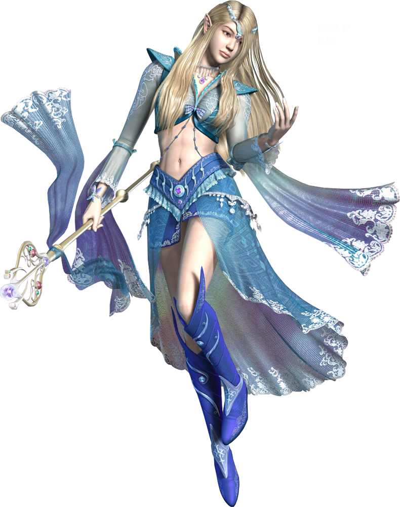

Je suis la fée Numéryka.
Aidez-moi dans ma quête ! Je suis à la recherche de la pionnière de l'informatique. Jusque là ma quête m'a menné sur les terres du méchant lutin Crypto_Minus, qui conserve dans son coffre un indice décisif qui me permettra de percer les derniers mystères de l'histoire de la Femme dans le numérique ... Guidez-moi jusqu'au coffre !
Vous êtes mon seul espoir !
Voulez vous m'aider ?